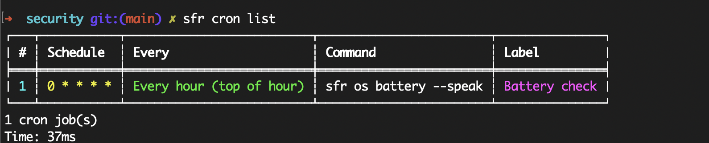

Quick Start
# List all cron jobs
sfr cron list
sfr cron list --json
sfr cron list --datatable # opens interactive HTML dashboard
# Add jobs with --every shorthand
sfr cron add --every 1h --command "sfr os battery --speak" --label "Battery check"
sfr cron add --every 30m --command "sfr os memory --speak"
sfr cron add --every 1d --command "sfr data query -q 'SELECT Id FROM Account' -o prod"
# Add with raw cron expression
sfr cron add --schedule "0 9 * * *" --command "sfr os info --speak" --label "Morning brief"
# Preview without touching crontab
sfr cron add --every 1h --command "sfr os battery" --dry-run
# Remove job #2 (index from sfr cron list)
sfr cron remove --index 2
sfr cron remove --index 2 --dry-runDemo
After running sfr cron add --every 1h --command "sfr os battery --speak" --label "Battery check", sfr cron list shows:

Subcommands
sfr cron list
| Flag | Default | Description |
|---|---|---|
| --json | off | Output as JSON array. |
| --datatable | off | Open interactive HTML dashboard in browser (sortable, searchable). |
sfr cron add
| Flag | Default | Description |
|---|---|---|
| --every INTERVAL | — | Human shorthand: 1m 5m 30m 1h 2h 6h 1d 1w. Mutually exclusive with --schedule. |
| --schedule EXPR | — | Raw 5-field cron expression, e.g. 0 9 * * *. Mutually exclusive with --every. |
| --command CMD | required | Shell command to run. |
| --label TEXT | — | Stored as a # comment line above the entry in crontab. |
| --dry-run | off | Print what would be added — crontab is not modified. |
sfr cron remove
| Flag | Default | Description |
|---|---|---|
| --index N | required | 1-based index from sfr cron list. |
| --dry-run | off | Print what would be removed — crontab is not modified. |
--every Interval Shorthand
1m
* * * * *
5m
*/5 * * * *
15m
*/15 * * * *
30m
*/30 * * * *
1h
0 * * * *
2h
0 */2 * * *
6h
0 */6 * * *
1d
0 0 * * *
1w
0 0 * * 0
Examples
Schedule sf-rust commands
# Speak battery status every hour
sfr cron add --every 1h --command "sfr os battery --speak" --label "Battery check"
# Speak memory usage every 30 minutes
sfr cron add --every 30m --command "sfr os memory --speak" --label "Memory watch"
# Morning system brief at 9am daily
sfr cron add --schedule "0 9 * * *" --command "sfr os info --speak" --label "Morning brief"
# Weekly org audit every Sunday midnight
sfr cron add --every 1w --command "sfr audit login -o prod --json > ~/logs/audit.json" \
--label "Weekly audit"Preview with --dry-run
sfr cron add --every 1h --command "sfr os battery --speak" --label "Battery check" --dry-run
# Battery check
# 0 * * * * sfr os battery --speak
# (dry-run — crontab not modified)List and remove
# See all jobs
sfr cron list
# Remove job at index 3
sfr cron remove --index 3
# Preview removal
sfr cron remove --index 3 --dry-runOpen interactive dashboard
sfr cron list --datatable
# Opens HTML dashboard with sortable columns and live searchPhase 2 — Named Job Store & Daemon
Phase 2 adds a persistent named-job store (~/.sf-rust/crons.toml) and a background daemon that runs jobs at their intervals without system crontab.
sfr cron schedule
| Flag | Default | Description |
|---|---|---|
| --name NAME | required | Unique job name used to run / unschedule later. |
| --every INTERVAL | required | Interval shorthand: 1m 5m 30m 1h 2h 6h 12h 1d 1w. |
| --command CMD | required | Shell command to run. |
| --label TEXT | — | Optional description. |
| --dry-run | off | Preview without touching crons.toml. |
sfr cron unschedule
| Flag | Default | Description |
|---|---|---|
| --name NAME | required | Job name from sfr cron jobs. |
| --dry-run | off | Preview without modifying crons.toml. |
sfr cron jobs
| Flag | Default | Description |
|---|---|---|
| --json | off | Output as JSON array. |
| --datatable | off | Open interactive HTML dashboard (sortable, searchable). |
sfr cron run
| Flag | Default | Description |
|---|---|---|
| --name NAME | required | Run the named job immediately and update last_run_secs. |
sfr cron daemon
| Subcommand | Description |
|---|---|
| start | Spawn daemon in background; write PID to ~/.sf-rust/cron-daemon.pid. |
| stop | Send SIGTERM to daemon and remove PID file. |
| status | Print running / stopped + PID + log path. |
| logs | Show last 50 lines of ~/.sf-rust/cron-daemon.log. |
Phase 2 Examples
# Register named jobs
sfr cron schedule --name battery --every 1h --command "sfr os battery --speak" --label "Battery check"
sfr cron schedule --name memory --every 30m --command "sfr os memory --speak"
sfr cron schedule --name morning --every 1d --command "sfr os info --speak" --label "Morning brief"
# List named jobs (shows Last Run + Next Run)
sfr cron jobs
sfr cron jobs --datatable # HTML dashboard
# Run a job immediately
sfr cron run --name battery
# Update a job (re-run schedule with same name)
sfr cron schedule --name battery --every 2h --command "sfr os battery --speak"
# Remove a job
sfr cron unschedule --name memory
# Start / stop / check the daemon
sfr cron daemon start
sfr cron daemon status
sfr cron daemon logs
sfr cron daemon stopDaemon persistence: The daemon is a child process that survives after the terminal closes. Its PID is in
~/.sf-rust/cron-daemon.pid and logs go to ~/.sf-rust/cron-daemon.log. It polls every 30 seconds and runs any overdue jobs.Combining with --speak
Any sfr os command with --speak works perfectly in a cron job — phonon-studio must be running.
# Start phonon-studio (once, in a persistent terminal or launchd)
phonon-studio --port 3000
# Then schedule speak jobs
sfr cron add --every 1h --command "sfr os battery --speak --voice Micah"
sfr cron add --every 30m --command "sfr os memory --speak --voice Harper"
sfr cron add --every 1d --command "sfr os info --speak"Tip: add
SF_RUST_NO_TIMING=1 in your crontab environment line to suppress timing output in cron logs: SF_RUST_NO_TIMING=1 at the top of crontab.Implementation
| File | Purpose |
|---|---|
| crates/sf-cron/src/lib.rs | handle_cron_command(), parse_crontab(), every_to_cron(), human_schedule(), crontab I/O |
| crates/sf-cli/src/lib.rs | Commands::Cron(CronCommands) |
| crates/sf-cli/src/main.rs | Dispatch to handle_cron_command() |
Crontab I/O: reads via
crontab -l, writes via crontab - (stdin). Labels are stored as # comment lines immediately before each entry. Remove also strips the associated label line.